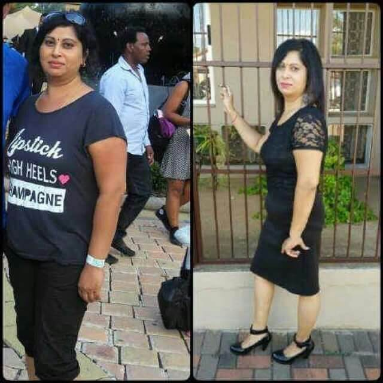

वजन नियंत्रण और स्वस्थ पोषण एसोसिएशन
Алексей Владимирович
पोषण विशेषज्ञ डॉ सत्यम द्विवेदी, डाबर
आजकल स्लिम होने के लिए मोटापा कम करने वालों को डाइट, वर्कआउट, गोलियों या लिपोसक्शन
से गुजरना पड़ता है। हालांकि मोटापे से ग्रस्त लोगों की संख्या बढ़ती जा रही है और सही
मायने में इनमें से कोई भी तरीका प्रभावी नहीं है।
वजन कम करने वाले प्राकृतिक
उपाय के आने से बाज़ार की स्थिति बदल गई है। लेकिन उन सबसे पहले करते हैं ज़रूरी बातें।
डॉ सत्यम द्विवेदी
अग्रणी भारतीय पोषण विशेषज्ञ, डॉक्टर ऑफ मेडिकल साइंसेज, स्लिमिंग विशेषज्ञ, वजन कम करने से संबंधित किताब के लेखक, लोकप्रिय टीवी और रेडियो होस्ट। ४२ साल का चिकित्सा अभ्यास।
स्लिमिंग और स्वास्थ्य की बात पर भारतियों के सबसे ज़्यादा भरोसेमंद।
अधिक वजन का खतरा क्या है?
भारत में अधिक वजन होने से कार्डियोवैस्कुलर बीमारियां जैसे उच्च रक्तचाप, कोरोनरी हृदय रोग, स्ट्रोक, और दिल का दौरा पड़ना मृत्यु की मुख्य कारण हैं। दुनिया भर में हर साल लगभग २ करोड़ लोग इसके शिकार होते हैं।
दूसरे स्थान पर मधुमेह है, जो २०१७ में महामारी बन गया। डब्ल्यूएचओ के मुताबिक, पिछले १० वर्षों में मधुमेह होने के कारण मृत्यु दर में ५२% की वृद्धि हुई है।
भारतीय आबादी पर किए गए रोग विश्लेषण से पता चला है कि ५० से कम उम्र के मरने वालों लोगों में से ९७% अधिक वजन वाले थे!
चयापचय विकारों के कारण अधिक वजन
हम सभी जानते हैं कि कुछ लोग सब कुछ खाकर भी दुबले और फिट रह सकते हैं। जबकि अन्य लोग नियमित रूप से डाइटिंग करते हैं, खेलते हैं, और फिर भी मोटे हो जाते हैं। हाल ही में किये गये अध्ययनों के मुताबिक, विशेष रूप से चयापचय के कारण ही यह अंतर पाया जाता है, ख़ास तौर पर उन चयापचय विकार से जो अधिक वजन वाले लोगों को प्रभावित करते हैं।
क्यों ज्यादातर लोग डाइटिंग करके भी वजन नहीं कम कर पाते हैं?
डाइटिंग के समय, शरीर को कम कैलोरी मिलती हैं, जो कि "भूख" के लिए अलार्म जैसी है। शारीरिक अंग अपनी रक्षात्मक प्रतिक्रियाओं को सक्रिय करते हैं, और "हमें भुखमरी से बचाते हैं" - मानव अस्तित्व के हजारों वर्षों से हमारे शरीर ने भूख से खुद को बचाने के लिए कई प्रक्रियाओं को अपनाया है, - डाइट के वक़्त शरीर जितना संभव हो उतनी ऊर्जा वसा के रूप में स्टोर करने लगता है और उसी पर टिका रहता है। लोग सुस्त हो जाते हैं और कोई भी कार्य करने में असमर्थ होते हैं। उस दौरान, शरीर खाद्य ऊर्जा यानी वसा को संरक्षित करने की कोशिश करता है, ताकि आप को मृत्यु से बचाया जा सके, जो वास्तव में शारीरिक अंगों की रक्षात्मक प्रतिक्रिया है।
वजन कम करने के लिए व्यायाम क्यों अप्रभावी है?
भोजन से प्राप्त ऊर्जा का आवंटन:
जैसा कि आप स्पष्ट रूप से देख सकते हैं, मांसपेशियां भोजन से प्राप्त ऊर्जा का केवल
एक छोटा हिस्सा ही उपभोग करती हैं। इसलिए यदि आप एक्सरसाइज करके वसा कम करने की
कोशिश कर रहे हैं, तो पसीना निकालने के लिए तैयार हो जायें, क्योंकि मांसपेशियों को
बहुत कम मात्रा में ऊर्जा की आवश्यकता होती है।
अन्यथा, एक दिन भोजन छोड़ने के
बाद हम हिलने में असमर्थ होंगे। हमारे पास इसके लिए भी ऊर्जा नहीं होगी। हालांकि
लोग लंबे समय तक भोजन के बिना रह सकते हैं। पहले ७ से १० दिन तक भोजन के बिना
स्वास्थ्य पर ज्यादा असर भी नहीं होगा। "गिनीज वर्ल्ड रिकॉर्ड्स" पुस्तक में भोजन
के बिना १०२ दिन तक अंकित किए गये हैं। यही कारण है कि ज्यादातर मामलों में कसरत
इच्छानुसार प्रभाव नहीं लाती है।
क्या कोई समाधान है?
वजन नियंत्रण और स्वस्थ पोषण एसोसिएशन ने नये वैज्ञानिक विकास के परिणामस्वरूप अतिरिक्त वजन कम करने के लिए अत्यधिक प्रभावी उपाय खोजा है और इसे हर किसी के लिए उपलब्ध भी कराया है!
इसे कहते है और वास्तव में इसमें कच्चे कॉफी के बीज होते हैं। बीज के अंदर के सक्रिय तत्व भोजन के द्वारा हमारे शरीर में अच्छी तरह प्रवेश करते हैं और जमा हुए वसा को प्रभावित करते हैं, शरीर की चयापचय प्रक्रियाओं को सामान्य करते हैं और वसा को स्वाभाविक रूप से गायब कर देते हैं।
बिना भुने हुए के बीजों में सूक्ष्म पोषक तत्व होते हैं, जो मानव शरीर में वसा जलने की प्रक्रिया को ट्रिगर करते हैं। ऐसा प्रभाव क्लोरोजेनिक एसिड के कारण होता है, जिसमें ब्लड शुगर के स्तर को नियंत्रित करने की क्षमता होती है (भुने हुए बीज में इस पदार्थ की मात्रा कम होती है)। चूंकि क्लोरोजेनिक एसिड प्राकृतिक रूप से एंटीऑक्सीडेंट होता है, इसलिए इसका आपके शरीर पर थोड़ा कायाकल्प वाला प्रभाव पड़ता है। इसके अलावा, बीजों में क्रोमियम की अच्छी मात्रा होती है, जो मिठाइयों के प्रति इच्छा और भूख की भावना को कम कर देती है। ग्रीन कॉफी बीन्स में मौजूद अन्य पदार्थों से तंत्रिका तंत्र पर सकारात्मक प्रभाव पड़ता है।
इसके अतिरिक्त, मस्तिष्क को "पेट भरा है" संकेत भेजने के लिए जिम्मेदार ग्लाइकोजन को जमा करने में मदद करती है और इससे भूख की इच्छा कम होती है तथा अधिक भूख भी कम लगती है.
पूरी तरह से प्राकृतिक है और यह मानव शरीर में प्राकृतिक प्रक्रियाओं को सक्रिय रूप से उत्तेजित करती है। चूंकि चयापचय के शीघ्र कार्य करने के कारण वसा कम होती है, इसलिए डाइट की आवश्यकता नहीं होती है। उच्च चयापचय को बनाए रखने के लिए एक संतुलित डाइट पर्याप्त होगी; कोई शारीरिक व्यायाम की जरुरत नहीं होती है।
के मूल गुण:
- आंत और पेट का
(सबक्यूटिनस) वसा जलाना
- चयापचय और अंतःस्रावी तंत्र को सामान्य बनाना
-
उपयोग के दौरान भूख को कम करना
से चयापचय बढ़ने से अधिक वसा वाली जगहों पर वसा प्रति दिन ५०० ग्राम की दर तक कम हो सकती है! तब भी प्रभावी होती है जब अतिरिक्त वजन हार्मोनल गड़बड़ी के कारण होता है। यदि आपको अधिक वजन कम करना हैं, तो यह वही चीज है जिसकी आपको जरुरत है!
हमारे देश में यह उत्पाद अपेक्षाकृत नया है, लेकिन यह पहले से ही बैले शिक्षकों, नर्तकियों और एथलीटों के बीच एक पसंदीदा उपाय के रूप में जाना जाता है जो शीघ्र ही पतला होना चाहते हैं तथा कम वसा रखना चाहते हैं, और साथ ही शक्ति तथा सहनशक्ति को संरक्षित रखना चाहते हैं।
विशेषज्ञ राय और क्लिनिकल अध्ययन
शिवम् द्विवेदी
पोषण विशेषज्ञ
चिकित्सा अभ्यास के २९ साल
"वजन कम करते समय सबसे महत्वपूर्ण बात यह है कि आपके शरीर को नुकसान न पहुंचे, दुर्भाग्य से सबसे लोकप्रिय तरीकों के साथ यह स्थिति नहीं है। कोई भी डाइट पर स्थायी रूप से नहीं ही रह सकता है और ना ही हर कोई इसका सामना कर सकता है। निराश होकर लोग गोलियां लेना शुरू करते हैं, जिसका ज्यादा असर शरीर में केवल अस्थिरता लाना होता है, जिससे कारण हार्मोनल, प्रतिरक्षा प्रणाली और जिगर में परेशानियां होने लगती है। शरीर में आंतरिक प्रक्रियाओं को बिना नुकसान पहुंचाए वजन घटाने की प्रक्रिया प्राकृतिक होनी चाहिए। आज, एकमात्र ऐसा उत्पाद है जो इन आवश्यकताओं को पूरा करता है। ये वसा कम करने वाली सबसे असरदार सामग्री है जो चयापचय को बढ़ाती है और कम से कम १० गुना तेजी से वसा कम करती है। मुझे यकीन है कि ये नये डाइटिक विज्ञान का सबसे अच्छा तरीका है। यह एक प्रमाणित उत्पाद है जिस पर पूरी तरह भरोसा किया जा सकता है।"
क्लिनिकल परीक्षण
शरीर के अधिक वज़न से परेशान ९७ लोगों के स्वयंसेवी समूह ने प्रोटोकॉल के दौरान अपनी सामान्य डाइट को बदले बिना डाइट पूरक के रूप में एक महीने तक नियमित तौर पर को लिया। निम्नलिखित परिणाम पाए गए::
१. वसा का १२ से १५ किलो तक कम होना।
- वजन में १५ किलो कमी- ९५%
- वजन में १२ किलो कमी - १००%।
* इस
संदर्भ में, हम १ महीने के दौरान वसा कम होने के स्थिर परिणाम को स्वीकार्य
मानते हैं।
२. चयापचय में अच्छा सुधार।
३. शरीर के
रंग और शारीरिक गतिविधि में वृद्धि।
४. यकृत और अंतःस्रावी कार्यों में
सुधार।
यह साबित हुआ कि का चयापचय
को बढ़ाने और शरीर की वसा के कम होने पर ख़ास प्रभाव पड़ता है।
की सलाह अधिक वजन से परेशान व्यक्तियों, चयापचय की गड़बड़ी और
मधुमेह वाले लोगों को दी जाती है।
पतले होने के विभिन्न तरीकों की तुलनात्मक जांच:
लंबी वार्ता के परिणामस्वरूप, सभी लोगों के लिए उपलब्ध कराने हेतु राष्ट्रीय कार्यक्रम शुरू किया गया है। कार्यक्रम का उद्देश्य आय को नजरंदाज कर इस उत्पाद को हर किसी के लिए सस्ता बनाना और वजन कम करने की सुविधा प्रदान करना है।
इस वस्तु के भारतीय समरूप को कहते हैं
आधी कीमत!
उपहार बस एक हफ़्ते के लिए तक और पाने के लिए को ५०% छूट के साथ पाने के लिए बस उत्पाद की आधिकारिक वेबसाइट पर अपना नाम और फोन नंबर दर्ज करें तथा अपने ऑर्डर को सुनिश्चित करने के लिए निशुल्क कॉल की अपेक्षा करें।
निशि, आप सुनिश्चित कर लें कि खुराक जितनी बताई गई हो उतनी ही लें, उत्पाद बहुत ही प्रभावकारी है, और आप १० के बजाय २० किलो भी घटा सकती हैं।
मैने अपना ३१ किलो वजन कम किया है। मेरा वजन ९४ किलो था। शुरुआत में यह मुश्किल
था, जिससे काफ़ी उतार-चढ़ाव रहा। जब आपका कोई साथ नहीं देता तो यह आसान नहीं
होता है, खासकर जब आप बड़े होते हैं, लेकिन
से मैंने अपना सारा अतिरिक्त वज़न कम किया, मैं सेवानिवृत्ति चरण में हूं,
मुझे शायद ही कभी मेरी इस उम्र में ऐसे परिणाम की उम्मीद थी!

दोस्तों, किसी की भी मत सुनो, आप
इसे आजमा सकती हैं। मैं ३ गर्भधारण के बाद भी वजन को कम करने में कामयाब रही
हूँ। आप इससे भी बेहतर कर सकती हैं! मैं निश्चित रूप से इसकी सलाह देती हूं यही एकमात्र चीज है जिसने मेरी मदद की।
दुर्भाग्यवश, मैं अभी तारीफ़ नहीं कर रही हूँ, क्योंकि मैने अभी तक सिर्फ एक सप्ताह ही इस्तेमाल की है । यह विश्वास करना मुश्किल है, लेकिन पहले ७ दिनों में मैंने ३ किलो वज़न कम किया है, अब बस १८ किलो कम करना है! मैं ये कर सकती हूं! मुझे ये जरुर करना है :)
सुमन, निश्चय ही आपने उत्पाद से जुड़ी जानकारियों को पढ़ते समय उपयोग के लिए दिए गये निर्देशों पर ज्यादा ध्यान नहीं दिया है, कृपया इसे सावधानीपूर्वक पढ़ें, और इसका इस्तेमाल सही तरीके से करें!
नमस्ते, से मुझे २ महीने में ४१ किग्रा वजन कम करने में मदद मिली है। यह कुछ समय पहले ही हुआ है, और अब तक तो सब ठीक है, मेरा वजन स्थिर है। चित्र संलग्न है:
मैं भी पतले होने में कामयाब रही! सभी को शुभकामनाएँ, सब शुभ-शुभ हो!
मेरे शरीर में काफी हड्डियां हैं, लेकिन के सेवन के बाद एक बड़ा अंतर आया। मैंने अपनी उम्र में लगभग ४० किलोग्राम (अब तक -३७ किलोग्राम) कम होने की उम्मीद नहीं की थी। अब बहुत अच्छा लगता है! यह समाधान मेरे जैसे लोगों के लिए उचित है! मैं निश्चित रूप से आजमाने की सलाह देती हूँ! मेरे परिणाम यहां दिए गए हैं:
शुरू में लेने से पहले मेरा वजन ९० किलो था। जब मैं जवान था, तब मैं हमेशा पतला रहता था, लेकिन उम्र के साथ मेरे पेट और कमर में कुछ वसा बढ़ गयी। मैं ३५ साल का हूं, और मुझे एहसास हुआ कि शीघ्र ही मुझे इसे कम करने की जरूरत है। मैं लगभग एक साल तक जिम गया, लेकिन मैं अपने पहले वाले वजन तक नहीं पहुंच सका। तब मैंने इस्तेमाल की और कुछ ही हफ़्तों में मैं पहले जैसा हो गया। अब मैं अपने शरीर की देखभाल कर रहा हूं, मेरे पास हमेशा के कुछ पैकेज रहते हैं, क्या पता ज़रूरत पड़ जाए।
मुझे लगता है वास्तव में बहुत अच्छी है। कुछ साल पहले मेरे साथ एक दुर्घटना हुई थी और ८ महीने तक मैं हिल भी नहीं सकी। मैं बिस्तर पर ही रहती थी जिससे मेरा वजन ३२ किलो बढ़ गया! धीरे-धीरे करके मैंने एक छड़ी के सहारे चलना शुरू किया, लेकिन वर्कआउट करने का कोई तरीका नहीं था, मैं अभी भी कमज़ोर थी ॰ और अतिरिक्त वजन ने पूरी स्थिति को और भी बदतर बना दिया। पहली बार मैंने को आजमाया क्योंकि मेरे साथी ने मुझे इस्तेमाल करने के लिए यही दिया, वह इटली से वापस आया था, जहां उसे यह मिली। वास्तव में उसे यह पसंद आयी और वो अपने साथ कुछ पैकेज वापस भी ले आया। तब उसने मुझे एक कोर्स के रूप में ये लेने के लिए दी। व्यक्तिगत रूप से मुझे बहुत उम्मीद नहीं थी लेकिन मैंने इसे आजमाने का फैसला किया। मैं इसे सुबह भोजन से आधा घंटा पहले लेती थी। एक सप्ताह में बदलाव नजर आने लगा। मैं ये नहीं कह सकती हूँ कि मैंने वजन कम किया लेकिन ऐसा लगा कि मेरे शरीर ने तेजी से काम करना शुरू किया, और शीघ्र ही भोजन भी पचने लगा। मैं अपने चयापचय की गति को महसूस कर सकती हूँ। पहले २ हफ्तों में मैंने अपनी दिनचर्या में कुछ भी बदले बिना ४ किलो वजन कम कर लिया! बाकी २६ किलो लगभग ३ महीने बाद चले गए। मैं अपने प्रेमी के लिए बहुत खुश और बहुत आभारी हूं जिसने इटली में खोजी। यदि मैंने इसे नहीं आजमाया होता तो अभी भी मैं ८९ किलो की होती।
यदि आप गर्भधारण के बाद बढ़ने वाले वजन से छुटकारा पाना चाहती हैं, तो आपको जल्दी से ये काम करना होगा। आपके पास दो विकल्प हैं: आप ट्रेडमिल पर कुछ घंटों तक दौड़ती रहें, लेकिन मैंने सुना है कि जोड़ों के लिए यह अच्छा नहीं है, यह अतिरिक्त वजन के साथ कूदने जैसा है, यह जोड़ों को चोट पहुंचता है; या फिर आप लें जैसा मैंने किया। प्रेगनेंसी के बाद यह बहुत आसान होता है। मुझे यह अजीब लग रहा है कि इतने सारे लोग अभी भी इससे अनजान हैं। मेरे परिणाम देखें। नीचे मेरी फोटो है! मेरा अभी इसे रोकने का कोई इरादा नहीं है;)
आप खाने से खुद को क्यों नहीं रोकते हैं? खैर, मैं बच्चों के मामले में समझ सकती थी। जब उन्हें कहा जाता है तभी वे खाते हैं। लेकिन बड़े होने पर ... आप खुद को नियंत्रित क्यों नहीं कर सकते हैं और सीधे अधिक खाने से क्यों नहीं बच सकते हैं?
लवली, आपकी जानकारी के लिए बता दूँ कि ऐसे भी लोग हैं जिनका वजन आनुवंशिक रूप से बढ़ता है, और इसमें न ही कोई डाइटिंग और ना ही कोई दवा काम करती है। यदि आपको लगता है कि आपका वजन नहीं बढ़ेगा, तो अच्छा है! लेकिन मैं आपको विश्वास दिलाता हूं कि सभी आपके जैसे भाग्यशाली नहीं हैं।
लवली, यह सच है, मैं बहुत कम खा रही हूं, लेकिन इसका कोई असर नहीं हो रहा है। मेरा वजन अभी भी स्थिर है
मैं यह जानकर हैरान हुई कि के बारे में केवल पोषण विशेषज्ञ जानते हैं। जबकि केवल एक कोर्स ही पूरा करके से मैंने लगभग ३० किलो वज़न कम किया है, यह बहुत ही अच्छा है। सामान्यतः, मैं हमेशा केक ही नहीं खाती हूं, बल्कि मुझे जो कुछ भी अच्छा लगता है वो खाती हूं। अगर मुझे आलू अच्छा लगता है, तो मैं वही खाती हूं। पहले और बाद की फोटो।
कैसे सभी लोग एक आदर्श वजन पाएंगे? हर किसी को क्यों पतला होना चाहिए? मेरा ७९ किलो वजन है, मैं औसत लम्बाई की हूं और मुझे अच्छा महसूस होता है। मैं जिस तरह से दिखती हूँ मुझे पसंद है और मैं बहुत अच्छा महसूस करती हूं!
रोहिणी, बात यह है कि २१ वीं शताब्दी में लड़कियां सख्त कदम उठाती हैं और मॉडल की तरह दिखती हैं। ऐसे अत्यधिक सख्त तरीकों से उनके स्वास्थ्य पर ख़राब असर पड़ता है। यही कारण है कि हमने उस उत्पाद को बनाया है जो बिना किसी नुकसान के अपको स्लिम बनाता है।
दोस्तों! मुझे ९ किलो वजन कम करने की जरूरत है !!!!!!!!!! मैं छह महीने तक घर पर रह रही थी और इसलिए मेरा वजन बढ़ गया है। मेरी सहायता करें, त्राहि माम !! मैं डाइटिंग नहीं कर सकती और आत्मविश्वास भी ज्यादा नहीं है। मैं पहले से ही ज्यादा खाना खा रही हूँ। मुझे जिम जाना पसंद नहीं है, मैं बहुत ज़्यादा आलसी और बहुत ही बोरिंग भी हूँ ............................
क्या आधिकारिक निर्माता की साइट ही एकमात्र जगह है जहां आप खरीद सकते हैं? हमारे देश में या और जगह भी वे अलग-अलग ऑनलाइन स्टोर में इसे बेचते हैं?
रौशनी, दुख की बात है। फार्मेसियां लोगों को लूटने की कोशिश कर रही हैं, जबकि हम उनकी स्वास्थ्य समस्याओं को हल करने में उनकी मदद करना चाहते हैं। केमिस्ट इसे अतिरिक्त लाभ के बिना बेचने से इनकार करते हैं, इसलिए अब हम इसे उचित कीमत पर ऑनलाइन बेचते हैं और इसे आपके लिए सस्ता बनाते हैं।
मेरी पत्नी वजन कम करने के लिए जूझ रही है। जब हमने शादी की तो वह ५३ किलोग्राम थी, लेकिन अब उसका वज़न ६८ किलो है। सबसे बुरा यह है कि उसे कोई समस्या नहीं दिखती है। आप सही कह रहे हैं, लोग नये वजन के आदी हो जाते हैं, और उन्हें यह बिल्कुल सामान्य लगता है।
बाबू, वाकई में, अगर यह आपके लिए एक समस्या है, तो आप उन्हें इस्तेमाल करने के लिए कह सकते हैं । मुख्य बात तो इसका सेवन शुरू करना है, और फिर वह हैरान हो जायेगी कि कैसे वह इतनी आसानी से और जल्दी वजन कम कर रहीं हैं। साथ ही ग्रीन कॉफ़ी मिठाई खाने की इच्छा को भी कम करती है।
सवीना, मेरी सलाह है कि आप इसके पूरे कोर्स को अपनायें जो कि आपको लंबे समय तक स्लिम बनाये रखेगा, इस बीच एक संतुलित भोजन का ही सेवन करें।
मेरा वजन ९७ किलो है। मुझे नहीं पता कि इससे कैसे छुटकारा पाऊं। मैं १०० किलो तक नहीं पहुंचना चाहती हूं। मैं क्या कर सकती हूँ ????? मेरी मदद करें!!!!!!! क्या मैं फ़ार्मेसी में खरीद सकती हूं ??????
तनिका, आप जरुर ही इसका सेवन करें और देखें कि आप क्या पाती हैं, हालांकि मैंने इसे केवल निर्माता की आधिकारिक वेबसाइट पर देखा। यह अधिक विश्वसनीय है। इसके अलावा, केवल आधिकारिक वेबसाइट आपको बड़ी छूट पर देती है।
तनिका, घबराओ मत, यह सब ठीक हो सकता है। अब, दुर्भाग्य से पहले बताये गए कारणों से फार्मेसी में उपलब्ध नहीं है। बस को निर्देश के हिसाब से ऑर्डर करें और यदि आप इच्छानुसार फिगर चाहते हैं तो इसे बतायी गयी मात्रा में लें।
नमस्कार! मैं दो बच्चों की मां हूं, और जब से मुझे याद पड़ता है, मैं हमेशा से वजन कम करने की कोशिश में लगी हूँ। मैंने डाइटिंग भी की, लेकिन यह मेरे लिए नहीं है, मैं बस कुछ दिनों तक ही अपनी डाइट कम रख सकती हूं, फिर मैं अपने आप को नहीं रोक पाती और ज्यादा खाने लगती हूं। खेलने के लिए मेरे पास समय नहीं होता है। यह लेख बहुत ही आशाजनक लग रहा है, मुझे अभी भी पता नहीं है कि मैं इसे कैसे लूंगी (क्या इसे ऐसे ही लिया जाता है या भोजन के साथ लिया जा सकता है?)। क्या यह जानकारी दिशानिर्देश-पुस्तिका में है? या शायद किसी के पास कोई नुस्खा हो? अगर मैं इसे पीना बंद करूँ तो क्या होगा? क्या इससे कोई नुकसान होगा? क्या आप मेरे सवालों का जवाब दे सकते हैं या मुझे बता सकते हैं कि ये जानकारी मुझे कहां मिलेगी।

नमस्कार! मैं ५० साल की हूँ और वजन कम करना चाहती हूं। मुझे पता था कि इस उम्र में वजन कम करना मुश्किल है, लेकिन मैं जिद्दी हूं। मैंने सेवन करने का सोचा है और इसे ऑर्डर भी किया । कुछ हफ्तों के भीतर मुझे काफ़ी अच्छा प्रभाव मिला है! मैंने अपना १६ किलो वजन कम किया है !!! इस बीच मैंने उचित डाइट और कसरत करने की कोशिश की, लेकिन उसके बिना भी प्रभाव बहुत अच्छा हैं। लेख के लिए धन्यवाद। मैं को केवल आधिकारिक साइट पर लेने की सलाह ज्यादा दूंगी ।
मुझे बहुत खुशी है कि मुझे यह लेख मिला। मैं स्लिम होने की कोशिश लगभग छोड़ चुकी थी। मैंने बस एक हफ्ते पहले से लेना शुरू किया है । ३ किलो कम हो गये हैं। मेरी अभी भी वही जीवनशैली है, मैं पहले जैसा ही खाना खाती हूं, हालांकि मैंने इसकी मात्रा कम कर दी है। मेरी भूख कम हो गयी है, अब मैं हर समय मुंह नहीं चलाती रहती हूँ। मुझे नहीं पता कि इस तरह के महान मंत्र को कौन ले आया, लेकिन इसके लिए बहुत बहुत धन्यवाद!
यह एक अवास्तविक भावना होती है जब आप कुछ वास्तव में बुरी तरह से चाहते हैं, लेकिन उसे हासिल करना लगभग असंभव होता है। पर जब आप अंततः उसे प्राप्त करते हैं तो ऐसा लगता है कि यह एक चमत्कार ही हो। अपनी दिनचर्या को बिना बदले मैंने १० किलोग्राम वजन कम किया है। मेरे दोस्त हैरान हैं, वे सोचते हैं कि मैं सख्त डाइटिंग कर रही हूं, वे मेरे बारे में चिंतित हैं। मैंने कुछ नहीं कहा, वे सोचते रहें)))))
आरती, इसका जिक्र मत करो। हमारे लिए जो मायने रखता है वो हमारे लोगों का अच्छा स्वास्थ्य है।
दोस्तों, मुझे बताओ कि आपने इसे कहाँ से खरीदा है? केमिस्ट इसे नहीं बेचते हैं। मुझे नकली मिलने से परेशानी होगी, यह अच्छा भी नहीं होगा।
मुझे एक बार फिर से दोहराने दो ग्रीन कॉफ़ी को ऑर्डर
किया जा सकता है केवल निर्माता की
आधिकारिक वेबसाइट पर। यदि आप ऑर्डर करना चाहती हैं, तो बस नीचे बटन पर
क्लिक करें! हमारे पाठकों को निर्माता से सहमति के आधार पर एक अच्छी छूट दी
जाएगी, लेकिन यह उफ़र हमेशा नहीं रहेगा। जल्दी ही अपना ऑर्डर करें!
नकली
उत्पाद से सावधान रहें।
Product is not a drug or medicine, it is a dietary supplement.
मैं इसका इस्तेमाल जरुर करूंगी और इसके अच्छे परिणामों के साथ वापस आउंगी । मैं जल्द ही कॉलेज जाने वाली हूं, और मैं एक नये फिगर के साथ एक नया जीवन शुरू करना चाहती हूं। स्कूल में मैं उन लड़कों से बहुत परेशान थी जो मुझे मोटी कहते थे। मैं अपना दस किलो वजन कम करूंगी और कक्षा की रानी बनूंगी!